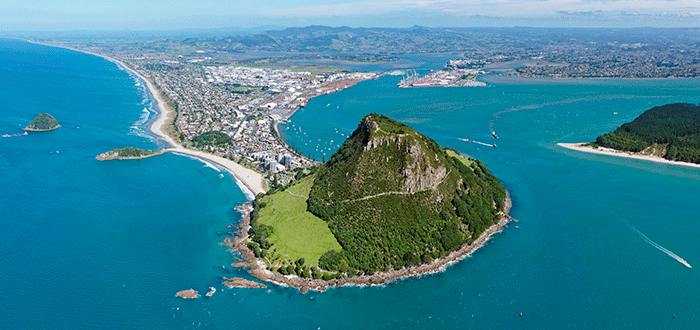
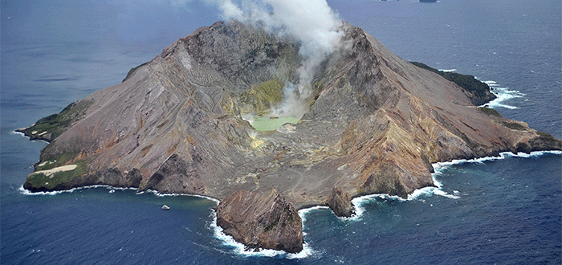
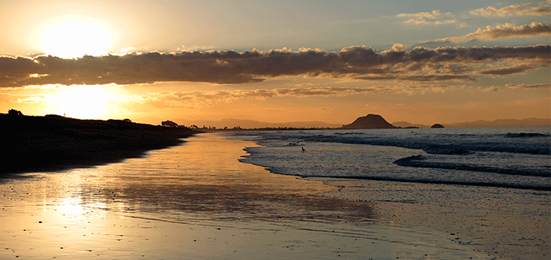

Tauranga
Tauranga es la mayor ciudad de Bay of Plenty, en la costa este de la Isla Norte de Nueva Zelanda. Se encuentra a 105 km de Hamilton y a 85 km al norte de Rotorua.
Tauranga es la ciudad que más ha crecido de Nueva Zelanda en las últimas décadas, y ahora es la novena ciudad más grande del país. En 30 años, la población se ha cuadruplicado. Este aumento de población se debe a que la ciudad atrae a muchos jubilados particularmente en el suburbio de Papamoa. También atrae a veraneantes y a surfistas, todo ello gracias a su buen clima.
Su superficie total es de: 168 km²
Población: 107.800 hab.

Clima
En Tauranga, los veranos son cómodos; los inviernos son fríos, mojados y ventosos y está parcialmente nublado durante todo el año. Durante el transcurso del año, la temperatura generalmente varía de 7 °C a 24 °C y rara vez baja a menos de 3 °C o sube a más de 26 °C.
En base a la puntuación de turismo, la mejor época del año para visitar Tauranga para actividades de tiempo caluroso es desde finales de Diciembre hasta mediados de Marzo.
Economia
El turismo es uno de las fuentes de economía en tauranga por sus increíbles lugares y su cultura.
Lugares Turisticos
Monte Maunganui
Es una de las principales atracciones de Tauranga y cómo no: está montaña es única. El monte Manganui es un volcán extinto de 232 metros de altura, imponente y lleno de vida, que se encuentra ubicado en un ala del continente. Cuenta con un ascenso corto y un sendero que te llevará hacia la playa ubicada en la base del Maunganui. Ambas opciones son aptas para todo público.
Dentro de la montaña hay otros senderos de 20, 30 y 45 minutos. En cualquiera de ellos podrás disfrutar de preciosos paisajes y un inolvidable encuentro con la naturaleza. Y no solo eso. Este lugar es perfecto para surfistas ya que en la playa que rodea la montaña hay un arrecife artificial que ayuda a la formación de las mejores olas.
El monte Manganui, conocido como Mauao en maorí, queda a tan solo 10 minutos de Tauranga y dos horas de Auckland.
White Islands
White Islands es un volcán activo de mucho reconocimiento en Nueva Zelanda, y cómo no. Su blanca fumarola se puede ver a kilómetros de distancia. La isla ubicada fuera de la costa de Whakatane ha tenido alrededor de 35 erupciones desde 1826, ninguna de ellas de gran intensidad.
La isla tiene dos kilómetros de diámetro, es de forma circular y su altura recae en los 321 metros sobre el nivel del mar. Pero esto no es todo, ya que lo que se ve es solo una parte del volcán. El resto, y de mayor magnitud, se encuentra sumergido.
Para disfrutar de esta maravilla natural puedes hacer en un viaje en helicóptero de 70 minutos o un paseo en lancha. Incluso te podrás bajar y realizar un tour a pie por la isla. Cualquiera de las experiencias te permitirá estar cerca y apreciar uno de los volcanes de mayor importancia en Nueva Zelanda. Te Puia o Whakaari es el nombre en maorí de White Islands y significa “el volcán impresionante”. Una acepción bastante acertada.
Papamoa Beach
Papamoa Beach recorre la costa de Tauranga desde el monte Maunganui y es una de las playas más visitadas de la región. Esto se debe a lo completo que es el lugar. Podrás disfrutar de un paseo por las dunas, de la blanca arena o del excelente oleaje del sector.
También de las actividades familiares que se realizan en la playa, pero por sobre todo de lo tranquilo del lugar. No hay mucha vida nocturna, algo que los miles de veraneantes que la visitan cada año deben agradecer. También es una zona popular para deportes acuáticos como el kitesurf o windsurf, incluso la pesca. Papamoa Beach es un lugar donde sin duda encontrarás qué hacer. Un destino que no te puedes perder.
Hoteles
Trinity Wharf Tauranga

Hotel de 4 estrellas
Este sofisticado hotel con vistas al puerto de Tauranga se encuentra a 7 km de la playa de Pilot Bay, a 2 km de las visitas guiadas en The Elms | Te Papa Tauranga y a 12 minutos a pie de la galería de arte de Tauranga.
El precio por dia es 6787 UYU
Numero de contacto: +64 7-577 8700
Apple Tree Backpackers
 Este peculiar albergue junto al puerto, ubicado junto a la carretera estatal 2, se encuentra a 7 km del monte Maunganui y a 5 km del aeropuerto de Tauranga.
Este peculiar albergue junto al puerto, ubicado junto a la carretera estatal 2, se encuentra a 7 km del monte Maunganui y a 5 km del aeropuerto de Tauranga.
El precio por dia es 1785 UYU
Numero de contacto: +64 7-576 4001
The Tauranga on the Waterfront

Hotel 4 estrellas
Este hotel sencillo con vistas a la bahía de Plenty se encuentra a 3 km de las tiendas de The Historic Village, a 6 km del Classic Flyers Museum y a 9 km del Waimarino Adventure Park.
El precio por día es 6095 UYU
Numero de contacto: +64 7-578 7079